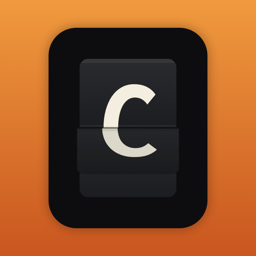

ClatterPrivacy Policy
Effective November 14, 2026
Clatter is a split-flap board. Nothing you put on it is sent anywhere. Contact: admin@joshmartine.com.
What the board remembers
When you quit, Clatter keeps in the app's preferences: your last message, the mode (message, clock or countdown), board style, 12 or 24 hour clock, sound on or off, your countdown title and date, the export shape and whether the small Clatter mark is on.
It also keeps one number, completedShares: how many times you finished sharing an export through the iOS share sheet. On the second completed share the app asks iOS to show its rating prompt. The number is not sent anywhere.
Exports
A video or still is generated on your iPhone. Videos are written to a temporary folder in the app, which is emptied the next time you make an export. The share sheet then hands it to whichever app you choose. Choosing Save Video or Save Image lets iOS add it to your photo library, and iOS asks you first. Clatter cannot read your photos.
Screen and sound
In the full-screen clock, Clatter stops the screen from sleeping while that view is open. The clacking is synthesized on the device, not downloaded or recorded, and the microphone is never used.
What is absent
No accounts, no ads, no analytics, no third-party code, no notifications, no location, no contacts and no network access at all. The app is a one-time purchase through the App Store; Apple handles payment (apple.com/legal/privacy) and we never see who bought it. Apple may give us anonymous crash reports only if you opted in to share them in iOS Settings.
Children, changes
Clatter gathers no information from anyone. If this policy is revised, the date above will change.